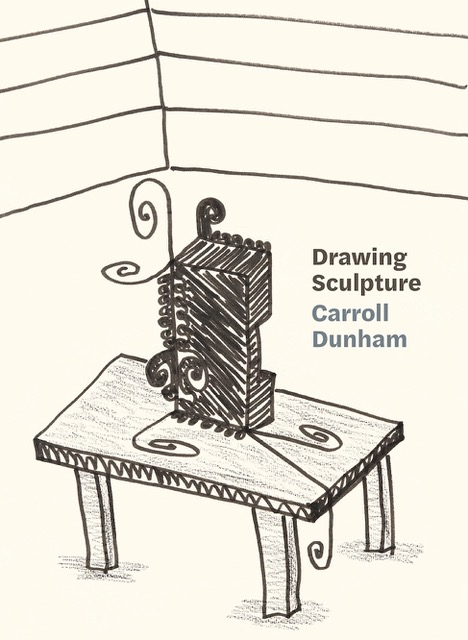

Carroll Dunham Conversation and Book Launch
In celebration of the publication of Drawing Sculpture (Soberscove, 2026), a book of images of recent drawings of sculptures by Carroll Dunham, Corbett vs. Dempsey is delighted to present an afternoon conversation between Dunham and John Corbett, with a specific focus on the book’s unusual subject matter. As the book jacket explains: “In Drawing Sculpture, we see Carroll Dunham thinking about sculpture over the course of a year. Spurred by curiosity about the forms that he found himself doodling along the edges of a new group of paintings in 2023, Dunham began drawing fantasies of sculpture as a break from working on the paintings. The eighty drawings collected here offer intimate access to an artist’s process, tracing the emergence of a sculptural vocabulary as they explore spatial relationships, materials, and presentation for sculptures that don’t exist.”
Carroll Dunham is an internationally renowned artist, acclaimed as a painter and drawer of exceptional imagination and power. At the end of January, his survey exhibition Carroll Dunham: Drawings 1974-2024 will open at the Art Institute of Chicago.
Copies of Drawing Sculpture will be available at the event.